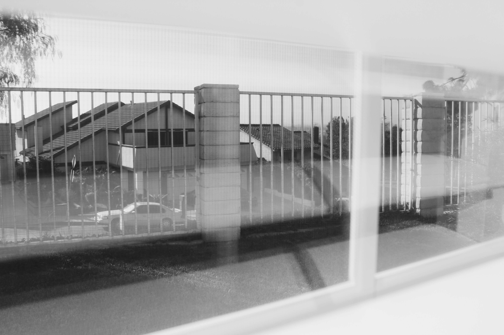
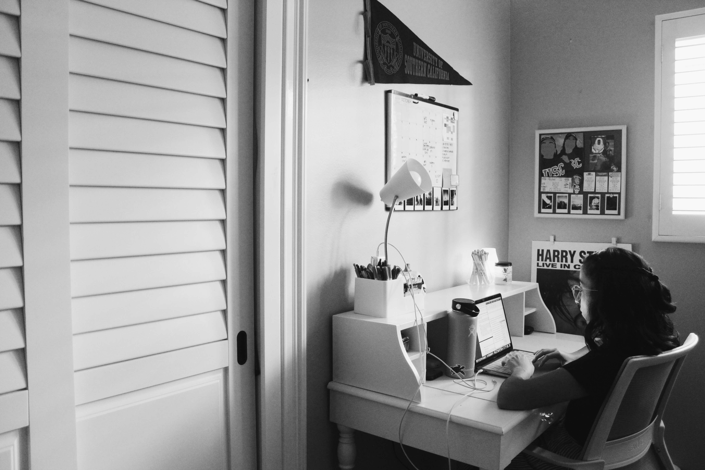

My name is Celine Vazquez and I’m currently a freshman studying biomedical engineering. Right now I am in Montebello, California - the same place I’ve lived in for the past 18 years. I’m here right now because this is where my family is, and the place that makes the most sense for me to be financially. Ending my senior year of high school during the pandemic was extremely challenging. I had curated this idea of what I thought my senior year would be like - celebrating college acceptances, getting to walk the graduation stage, and saying goodbye to all of my classmates. Things didn’t work out the way I had planned, and I’m now going through my first semester of college online. It’s been an interesting experience, to the say least. Making friends and connections with professors has definitely looked different, but I’m so appreciative of the people I have met virtually so far. I’ve met a great group of friends that support me with chemistry labs and Zoom fatigue. I’m also super lucky my sister lives with me - she also goes to USC, and we’re in some of the same classes, which has been awesome. Although this whole experience has thrown a huge curve ball into what I thought 2020 would look like, it’s taught me to appreciate every day and every person that has come in and out of my life. These pictures showcase the little memories I’ve experienced during this first semester. Although this point in time is “unprecedented,” capturing special moments like these is what gets me through. These photos are a subtle reminder that when something goes terribly wrong, the only thing left to do is face it, and dive headfirst into what life has left to offer.